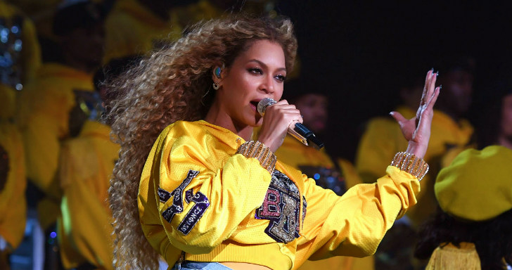

Who run the world? Girls!
Beyoncé Giselle Knowles-Carter Conhecida também apenas como Beyoncé ,é uma cantora, compositora, atriz,modelo,dançarina, produtora, diretora e roteirista norte-americana. Nasceu em Houston, Texas,Estados Unidos no dia 4 de setembro de 1981 (39 anos).
"Feminista: uma pessoa que acredita na igualdade social, política e econômica entre os sexos." - Chimamanda Ngozi Adichie
Sua história
Beyoncé se tornou conhecida no ano de 1997, como uma das integrantes do grupo feminino de R&B Destiny's Child, que já vendeu mais de 50 milhões de discos mundialmente. Em 2003, ela lançou seu álbum de estreia em carreira solo, Dangerously in Love. O álbum teve um bom desempenho comercial e os singles "Crazy in Love" e "Baby Boy" alcançaram o primeiro lugar na Billboard Hot 100. No ano seguinte, foi premiada com cinco Grammy Awards.
Em 2006, lançou seu segundo álbum de estúdio, B'Day, dando continuidade a sua carreira solo depois da separação do grupo Destiny's Child em 2005. B'Day se tornou seu segundo disco consecutivo em primeiro lugar na Billboard 200. O single "Irreplaceable" deste trabalho foi o que mais se destacou por permanecer por dez semanas consecutivas em primeiro lugar na Billboard Hot 100. Seu terceiro álbum, I Am... Sasha Fierce, foi lançado em novembro de 2008. Também teve um desempenho comercial muito favorável, sendo certificado pela ABPD como disco de diamante.
A música "Single Ladies (Put a Ring on It)" foi uma das músicas do seu terceiro álbum que mais se destacou, se tornando o seu quinto single em primeiro lugar na Billboard Hot 100. Nos Grammy Awards de 2010, Beyoncé se tornou a artista feminina que mais foi premiada em apenas uma edição da premiação, por vencer seis das dez categorias em que estava concorrendo. Atualmente Beyoncé já ganhou ao longo de sua carreira 24 Grammys (21 em carreira solo e 3 com o grupo Destiny's Child). Ela é uma dos artistas que mais ganhou esse prêmio.
Beyoncé acumula exatos 22 Grammys. A revista Billboard colocou-a em quarto lugar na lista dos melhores artistas da década de 2000, aparece também no nono lugar, com o grupo Destiny's Child. Em fevereiro de 2010, a RIAA listou Beyoncé como a artista que mais recebeu certificações na década. No mesmo ano, o VH1 colocou a cantora no número 56 em sua lista dos 100 Maiores Artistas de Todos os Tempos. Em 2011, durante a premiação do Billboard Music Awards, Beyoncé recebeu o premio de Billboard Millennium Award. No mesmo ano, a Forbes listou as mulheres afro-americanas mais poderosas nos Estados Unidos e colocou Beyoncé em primeiro de sua lista. E, em 2012, o VH1 colocou Beyoncé no número 3 em sua lista das 100 Grandes Mulheres na Música ficando atrás apenas de Madonna e Mariah Carey.
Bey não inciou uma campanha no Haiti pra ajudar crianças com câncer. Ela iniciou duas. A primeira parte da #BeyGOOD aconteceu depois e uma viagem ao Haiti, na qual ela visitou alguns programas assistenciais à criança com câncer e prontamente abraçou a causa. A reedição da campanha rolou em agosto de 2015 e durou 24 horas, arrecadando fundos pro Hispital Pediátrico St. Damien.
Hoje, Beyoncé é casada com o rapper Jay-Z, com quem tem três filhos Blue,Rumi e Sir.